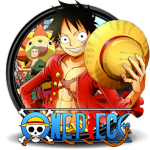
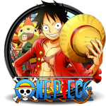

Siga One Piece nas redes sociais
.png) 

One Piece é um mangá de aventura pirata escrito e desenhado por Eiichiro Oda. A obra é conhecida por empregar temas coloridos e criativos que são retirados da mitologia clássica, da política e de aspectos musicais. Também é misturada com a tradição pirata e a fórmula shonen.
Lançado em julho de 1997, One Piece já publicou 1076 capítulos (reunidos em 106 volumes tankōbon) e gerou uma enorme franquia, incluindo uma adaptação para anime da Toei Animation, muitos filmes Desde o final dos anos 2000, é reconhecido como o mangá mais popular do Japão, sendo até mesmo creditado pelo Guinness World Records como a história em quadrinhos de um único autor mais vendida do mundo.
Vinte e dois anos antes do início da história, o Rei dos Piratas, Gol D. Roger, foi executado. No entanto, antes de sua morte, ele revelou a todos que seu tesouro, o One Piece, estava escondido no final da Grand Line. Isso inspirou as pessoas a se tornarem piratas e navegarem em direção ao tesouro, iniciando a Grande Era dos Piratas.Doze anos depois, um menino do East Blue chamado Monkey D. Luffy sonhou em encontrar o One Piece, mas perdeu a habilidade de nadar depois de comer uma Akuma no Mi, o que lhe deu a capacidade de esticar o corpo como borracha. Ele recebeu um chapéu de palha do pirata Shanks, que mais tarde se tornaria um Yonkou, um dos quatro piratas mais poderosos do mundo. Luffy fez a promessa de que devolveria o chapéu assim que se tornasse um pirata e superasse Shanks.
Mais dez anos se passaram e Luffy partiu para o mar aos 17 anos. Sua infâmia começou a crescer quando ele formou os Piratas do Chapéu de Palha e derrotou alguns dos piratas mais notórios do East Blue. Ele recrutou quatro tripulantes: Roronoa Zoro, combatente que buscava se tornar o maior espadachim do mundo, Usopp, atirador que buscava se tornar um bravo guerreiro do mar, Sanji, cozinheiro que buscava encontrar um mar escondido conhecido como All Blue,, e Nami, navegadora que sonhava em desenhar um mapa-múndi. Luffy entrou na Grand Line com uma recompensa de Berry 30,000,000 por sua cabeça.
“A justiça é baseada em valores que mudam a cada geração.”